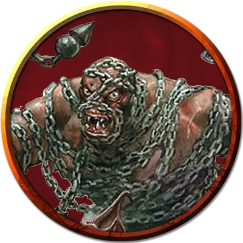

Огр цепной громила
Ogre Chain Brute
Большой Великан, хаотично-злой

Класс Доспеха 11 (шкурный доспех)
Хиты 59 (7к10 + 21)
Скорость 40 футов
| мод | спас | ||
|---|---|---|---|
| СИЛ | 19 | +4 | +4 |
| ЛОВ | 8 | −1 | −1 |
| ТЕЛ | 16 | +3 | +3 |
| мод | спас | ||
|---|---|---|---|
| ИНТ | 5 | −3 | −3 |
| МДР | 7 | −2 | −2 |
| ХАР | 7 | −2 | −2 |
Чувства тёмное зрение 60 футов, пассивное Восприятие 8
Языки Общий, Великаний
Опасность 3 (700 опыта)
Бонус мастерства +2
Среда обитания Горы, Луг, Холмы
Действия
Кулак. Рукопашная атака оружием: +6 к попаданию, досягаемость 1 футов, одна цель. Попадание: 9 (2к4 + 4) дробящего урона.
Взмах цепью. Огр размахивает цепью, и все существа в пределах 10 футов от него должны пройти спасбросок Ловкости Сл 14. В случае провала существо получает 8 (1к8 + 4) дробящего урона и сбивается с ног. В случае успеха существо получает только половину этого урона и не сбивается с ног.
Цепное сокрушение (перезарядка 6). Рукопашная атака оружием: +6 к атаке, досягаемость 10 футов, одна цель. Попадание: 13 (2к8 + 4) дробящего урона и цель должна преуспеть в спасброске Телосложения Сл 14, иначе будет сбита с ног и потеряет сознание на 1 минуту. Бессознательная цель повторяет спасбросок, если получает урон и в конце каждого своего хода, завершая эффект в случае успеха.
Описание
Цепной громила имеет при себе длинную цель с шипами. Держа цепь обеими руками, он размахивает ею по широкой дуге вокруг себя чтобы сбивать противников с ног. Также он способен замахиваться цепью с такой скоростью, которую практически невозможно заблокировать или отразить.